平面波
本文涉及模块
平面波源（Plane Wave Source）是一种用于模拟外部电磁波入射到结构上的源类型。它可以模拟来自远处的入射波是仿真中常用的一种激励方式。当使用平面波激励时，必须满足以下三个条件：背景材料必须被设置为普通材料，而不是导电材料；边界条件必须定义为开放边界；仿真方法仅限离散扫频。 右击激励源选择创建源右滑菜单栏选择平面波，即可打开平面波编辑页面。

平面波激励源的主要应用场景包括：
- 入射波源
平面波源通常用作模拟从某一方向进入仿真区域的电磁波信号。这种波源的特点是电场和磁场是平面波形式，并且具有固定的波长、方向和极化状态。
- 模拟远场
平面波源常用于远场分析，即可以帮助分析电磁波在大范围内的传播情况，计算目标物体的散射截面、辐射模式等。
- 传播模式和衍射效应分析
使用平面波源可以研究结构对入射电磁波的影响，如反射、折射、衍射、吸收等现象。这对于设计雷达隐身材料、波导、光纤等是非常重要的。

参考坐标系
平面波源通常用作模拟从某一方向进入仿真区域的电磁波信号。这种波源的特点是电场和磁场是平面波形式，并且具有固定的波长、方向和极化状态。
平面波源常用于远场分析，即可以帮助分析电磁波在大范围内的传播情况，计算目标物体的散射截面、辐射模式等。
使用平面波源可以研究结构对入射电磁波的影响，如反射、折射、衍射、吸收等现象。这对于设计雷达隐身材料、波导、光纤等是非常重要的。
WavEDA平面波激励源有两种形式设置传播方向，笛卡尔坐标系和球坐标系。
- 笛卡尔坐标系
- 球坐标系
笛卡尔坐标系使用三个相互垂直的轴（通常是X、Y、Z 轴）来定义空间中的位置。直接输入波矢量分量（k1,k2,k3），例如 k1=1，k2=0，k3=0 表示沿x轴传播。
球坐标系是基于球形对称性的坐标系统，使用极角和方位角来定义空间中的位置。输入角度参数：θ（仰角）：例如输入90°表示波沿x-y平面传播；φ（方位角）：例如输入180°表示波沿负x轴方向。同样的，软件可切换参数的数据类型为弧度。

传播方向
平面波由波矢量k与电场矢量E共同定义。k在球坐标系下可以用球坐标系下可以用弧度或者角度进行定义大小。在笛卡尔坐标系下可以直接输入三维矢量进行定义。通过定义平面波的传播方向，软件会自动保证输入的k和E保持正交。需要注意不可输入（0,0,0）作为传播方向。
零相位点
在设置平面波源时，可以选择一个空间点作为相位参考点。但是该点的位子不影响其平面波的传输，它仅作为显示使用。
参考轴和参考频率
用户可以通过自行定义一个参考轴，软件将会计算k矢量和参考轴的乘积来定义H场分量，用户不必确保波矢量与电场极化方向垂直。为确保仿真结果的正确性，k矢量和参考轴数值设置不得一致。若模型包含辐射边界或PML，需确保平面波传播方向与边界对齐，避免反射干扰。
参考频率值，该选择常用于时域仿真，在频域仿真时不可填写。
极化方向
平面波激励可定义三个类型的极化：线极化、圆极化、和椭圆极化。
线极化：
- 设置原理
对于线极化设置页面只要设置电场分量幅值：
V(TM)幅值：对应V极化分量（即TM波）。
H(TE)幅值：对应H极化分量（即TE波）。
示例：设置 V=1 V/m, H=0 V/m实现沿Z轴线极化。底部的仿真参数信息给出了当前设置下线极化的等效电场矢量。
电场矢量与V极化、H极化的关系式如下：

k矢量在平面波设置页面由用户填写，a矢量为参考轴数值，默认为（0，0，1）。
- 设置效果
一个电场矢量存在于具有固定方向的激发平面，电场矢量根据使用的输入信号改变大小。如下图所示。
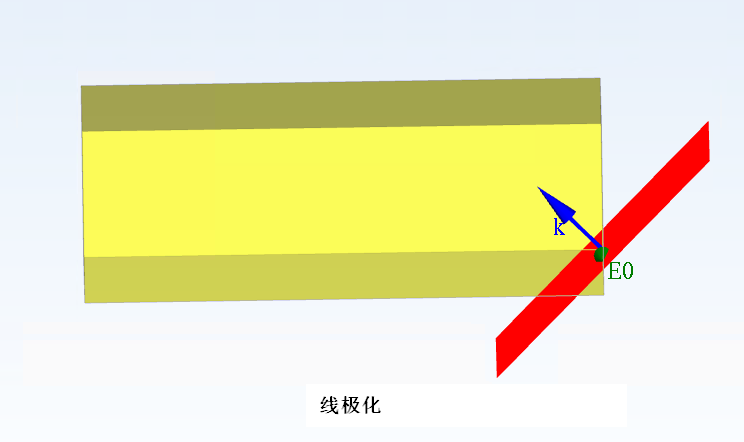
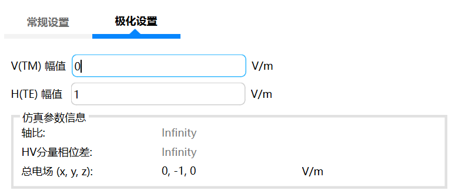
圆极化:
- 设置原理
对于圆极化，在相互垂直的激发面上存在两个电场矢量。圆极化两个电场矢量根据激励信号以一定的时间延迟激励。
根据给定的参考频率和两个电场矢量之间的相移，软件自动计算该时间延迟。用户只需在WavEDA内填写V(TM)幅值（即TM波）。
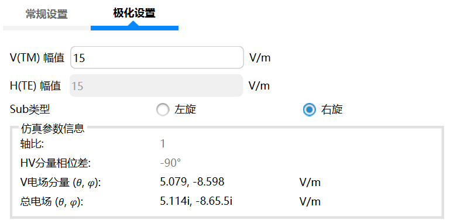
- 左圆极化和右圆极化
两者的主要区别在于电场旋转方向和相位关系的不同，如右旋圆极化电场矢量在垂直于传播方向的平面上以顺时针方向旋转。对于圆极化，轴比始终为1，相移为-90°时平面波为左旋圆极化，相移为90°时平面波为右旋圆极化。
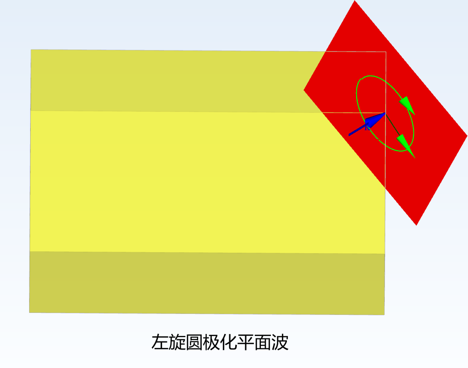
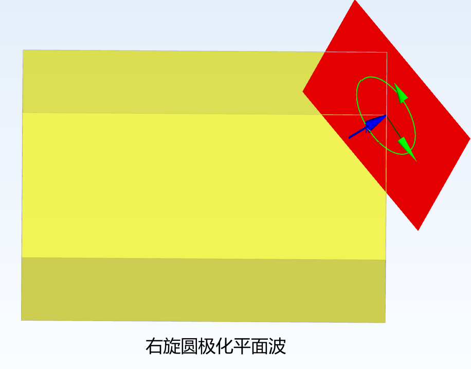
椭圆极化:
- 设置原理
对于椭圆极化，同样存在两个电场矢量。也存在时间延迟激励。除了上述V(TM)幅值和H(TE)幅值外，WavEDA还支持通过设置长半轴和短半轴电场来定义电场矢量。需要注意该种设置方式下长半轴电场必须大于短半轴电场。
根据给定的参考频率和两个电场矢量之间的相移，计算该时间延迟。
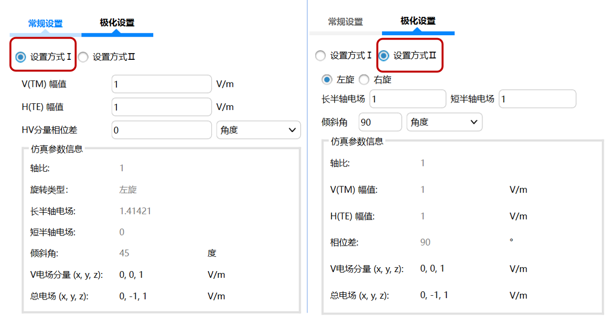
- 相位差
此处输入椭圆极化平面波的两个激励矢量之间的相位差。相位差不等于正负90°时为椭圆极化。0°~180°为左旋，180°~360°为右旋。
- 轴比
定义用于椭圆极化的两个电场矢量振幅之间的比。
轴比（AR）：AR=短半轴电场/长半轴电场 =H(TE)/V(TM)。
电场矢量的长度和方向定义了长轴的长度和方向。
短轴的长度根据用户给定的轴比计该设置仅适用于椭圆极化平面波激励。
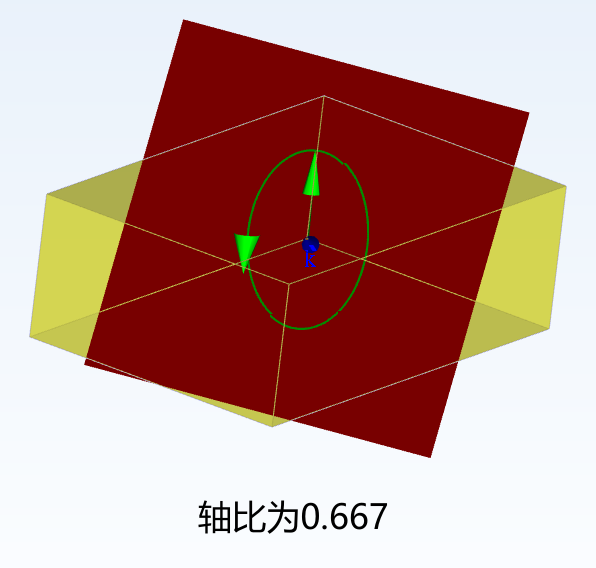
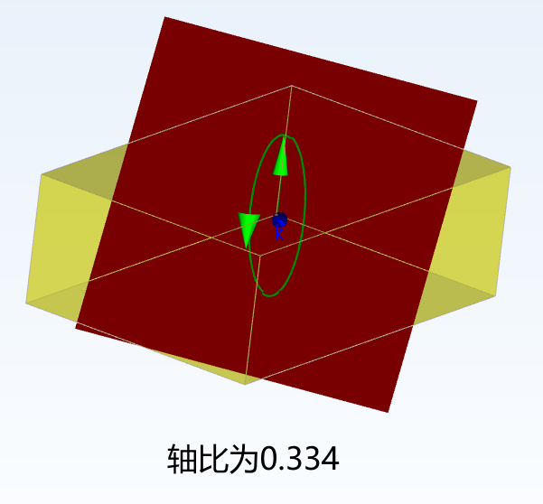
倾斜角
定义椭圆主轴的方向，与参考坐标系的夹角。修改倾斜角也会影响椭圆极化的相位差。
平面波实例
如下图设置笛卡尔坐标系下斜入射的椭圆极化平面波
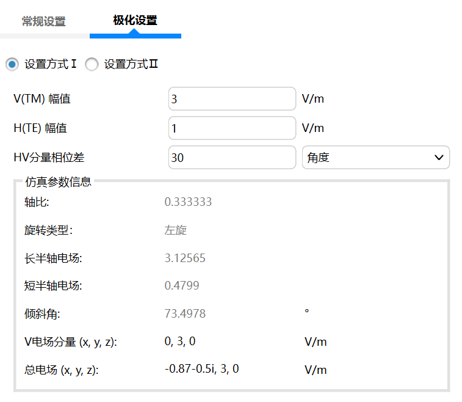
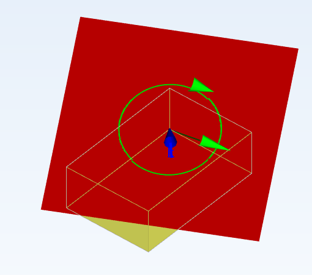
在WavEDA内，用户可查看该模型的单站雷达散射截面，也可以查看其他的3D远场结果。
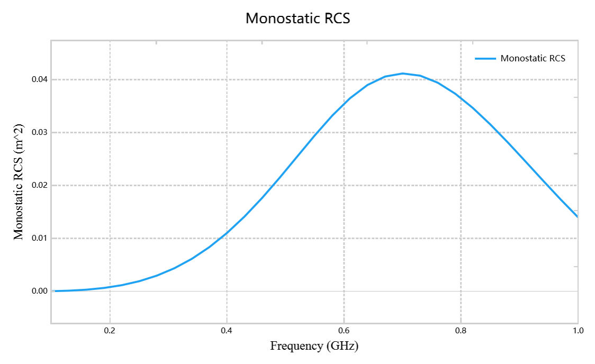
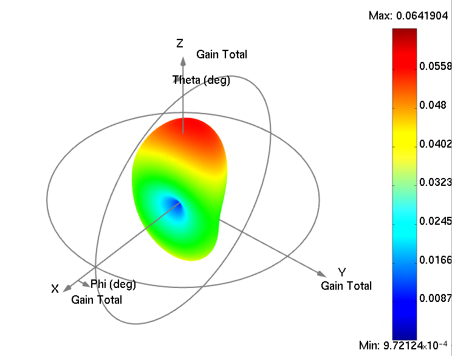
对于线极化设置页面只要设置电场分量幅值：
V(TM)幅值：对应V极化分量（即TM波）。
H(TE)幅值：对应H极化分量（即TE波）。
示例：设置 V=1 V/m, H=0 V/m实现沿Z轴线极化。底部的仿真参数信息给出了当前设置下线极化的等效电场矢量。
电场矢量与V极化、H极化的关系式如下：
k矢量在平面波设置页面由用户填写，a矢量为参考轴数值，默认为（0，0，1）。
一个电场矢量存在于具有固定方向的激发平面，电场矢量根据使用的输入信号改变大小。如下图所示。


- 设置原理
- 左圆极化和右圆极化
对于圆极化，在相互垂直的激发面上存在两个电场矢量。圆极化两个电场矢量根据激励信号以一定的时间延迟激励。 根据给定的参考频率和两个电场矢量之间的相移，软件自动计算该时间延迟。用户只需在WavEDA内填写V(TM)幅值（即TM波）。

两者的主要区别在于电场旋转方向和相位关系的不同，如右旋圆极化电场矢量在垂直于传播方向的平面上以顺时针方向旋转。对于圆极化，轴比始终为1，相移为-90°时平面波为左旋圆极化，相移为90°时平面波为右旋圆极化。


椭圆极化:
- 设置原理
对于椭圆极化，同样存在两个电场矢量。也存在时间延迟激励。除了上述V(TM)幅值和H(TE)幅值外，WavEDA还支持通过设置长半轴和短半轴电场来定义电场矢量。需要注意该种设置方式下长半轴电场必须大于短半轴电场。
根据给定的参考频率和两个电场矢量之间的相移，计算该时间延迟。

- 相位差
此处输入椭圆极化平面波的两个激励矢量之间的相位差。相位差不等于正负90°时为椭圆极化。0°~180°为左旋，180°~360°为右旋。
- 轴比
定义用于椭圆极化的两个电场矢量振幅之间的比。
轴比（AR）：AR=短半轴电场/长半轴电场 =H(TE)/V(TM)。
电场矢量的长度和方向定义了长轴的长度和方向。
短轴的长度根据用户给定的轴比计该设置仅适用于椭圆极化平面波激励。


倾斜角
定义椭圆主轴的方向，与参考坐标系的夹角。修改倾斜角也会影响椭圆极化的相位差。
平面波实例
如下图设置笛卡尔坐标系下斜入射的椭圆极化平面波


在WavEDA内，用户可查看该模型的单站雷达散射截面，也可以查看其他的3D远场结果。


对于椭圆极化，同样存在两个电场矢量。也存在时间延迟激励。除了上述V(TM)幅值和H(TE)幅值外，WavEDA还支持通过设置长半轴和短半轴电场来定义电场矢量。需要注意该种设置方式下长半轴电场必须大于短半轴电场。 根据给定的参考频率和两个电场矢量之间的相移，计算该时间延迟。

此处输入椭圆极化平面波的两个激励矢量之间的相位差。相位差不等于正负90°时为椭圆极化。0°~180°为左旋，180°~360°为右旋。
定义用于椭圆极化的两个电场矢量振幅之间的比。 轴比（AR）：AR=短半轴电场/长半轴电场 =H(TE)/V(TM)。 电场矢量的长度和方向定义了长轴的长度和方向。 短轴的长度根据用户给定的轴比计该设置仅适用于椭圆极化平面波激励。


定义椭圆主轴的方向，与参考坐标系的夹角。修改倾斜角也会影响椭圆极化的相位差。
平面波实例
如下图设置笛卡尔坐标系下斜入射的椭圆极化平面波


在WavEDA内，用户可查看该模型的单站雷达散射截面，也可以查看其他的3D远场结果。

